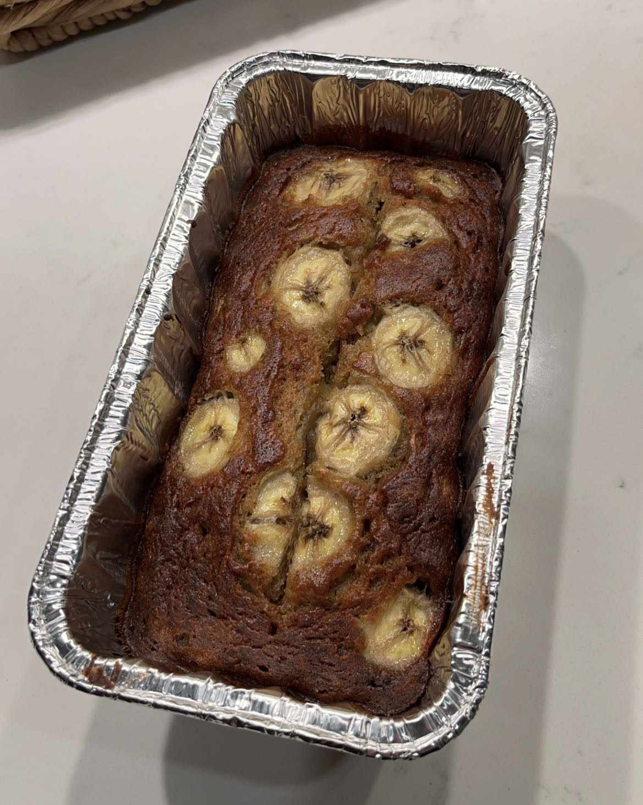
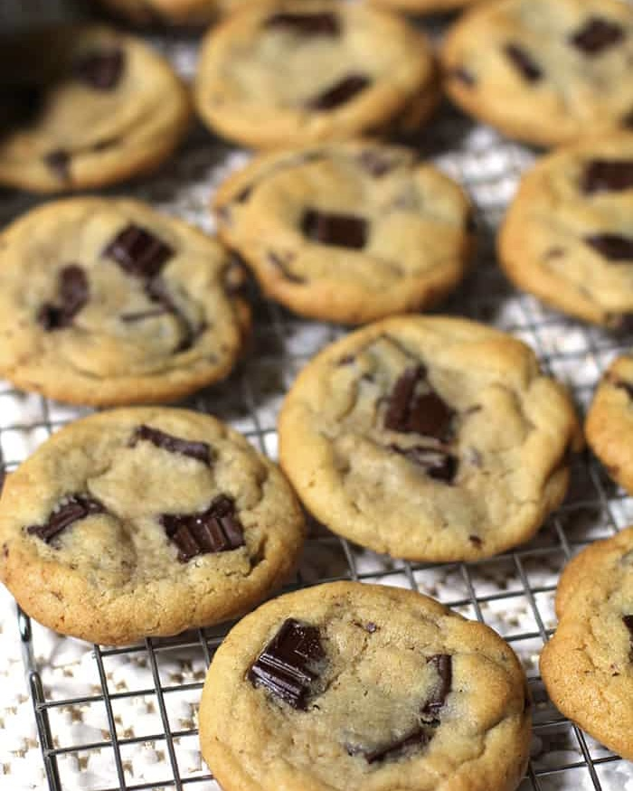

Banana Bread (85 min)
Eating bananas can help in enhancing your mood. This is because bananas affect tryptophan - an amino acid which helps in production of serotonin. Tryptophan also helps in improving sleep and regulates intake of food. Potassium-rich bananas also contain a good amount of Vitamin B-6 and fiber. Here is recipi!